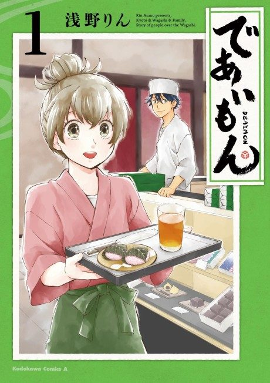

Anime
Anime
MangaDeaimon: Recipe for Happiness
であいもん
After the anime, read the manga from Chapter 21.
7.4AniList
—Animeter
12 epEpisodes
Anime finished. Where does the manga pick up?
Start at Chapter21
The anime adapts through chapter 20, so start at chapter 21. The manga is still ongoing.
120ongoing
Season 1Start reading here